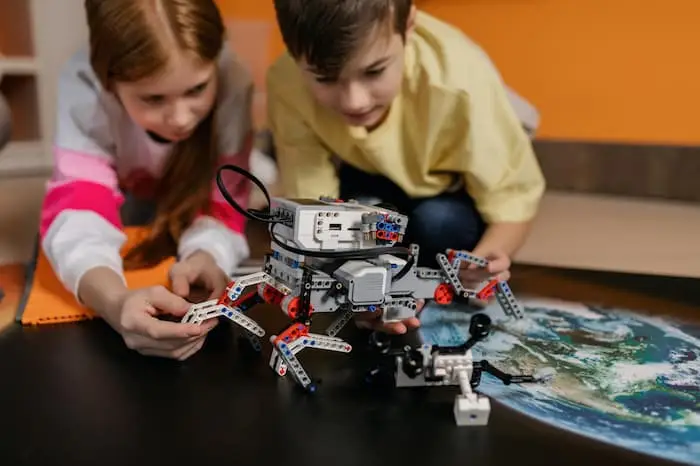
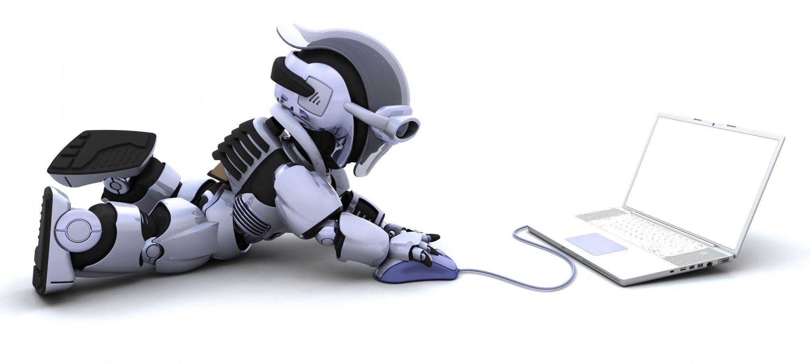

Introduccion
Pese a que pueda sonar a ciencia ficción, lo cierto es que la robótica es ya una industria establecida y los robots nos rodean por doquier. El problema es que no son los simpáticos humanoides que nos ha mostrado el cine, sino eficaces máquinas carentes de personalidad.

El ser humano lleva siglos soñando con la creación de máquinas autónomas y obedientes, capaces de llevar a cabo los trabajos más duros. A finales del siglo XX ese sueño comenzó a ser real. Los robots ya han demostrado ser excelentes sustitutos de los humanos para llevar a cabo tareas repetitivas que no requieran capacidad de improvisación. Ya hay numerosos robots trabajando en minas y excavaciones petrolíferas, fabricando bienes de consumo en cadenas de montaje, explorando el espacio y combatiendo en guerras.
¿Qué es un robot?
Según el Instituto Norteamericano de Robótica es un manipulador multifuncional y reprogramable, diseñado para mover materiales, piezas, herramientas o dispositivos especiales, mediante movimientos programados y variables que permiten llevar a cabo diversas tareas
Dos grandes familias de robots
Robots industriales:
Manipuladores. Aquellos que sueldan, pintan, taladran, trabajan con productos peligrosos… El 54% de los robots españoles se dedican a la soldadura.
De control remoto. Se utilizan para localizar gente sepultada, desactivar explosivos o minas antipersona, tender cables en el fondo del mar, tomar muestras de minerales en la luna… Los hay terrestres, submarinos, aéreos y espaciales.
Prótesis y asistentes. Aquellos que sustituyen miembros humanos (manos, piernas, brazos…) y los que prestan asistencia a personas con minusvalías.
De uso doméstico. En constante aumento. Son los que ayudan en tareas domésticas, como aspirando el polvo o cortando el césped.
Robots experimentales:
Desarrollados normalmente por universidades, empresas e instituciones con el propósito de investigar campos concretos de la robótica. Estas dos últimas divisiones tienden a solaparse en ocasiones. Algunos han llegado a popularizarse, como Asimo de Honda, e incluso se venden al público, como los perritos Aibo de Sony.

Regresar